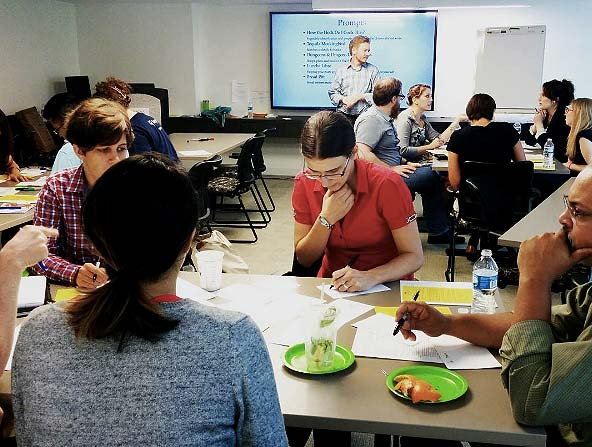
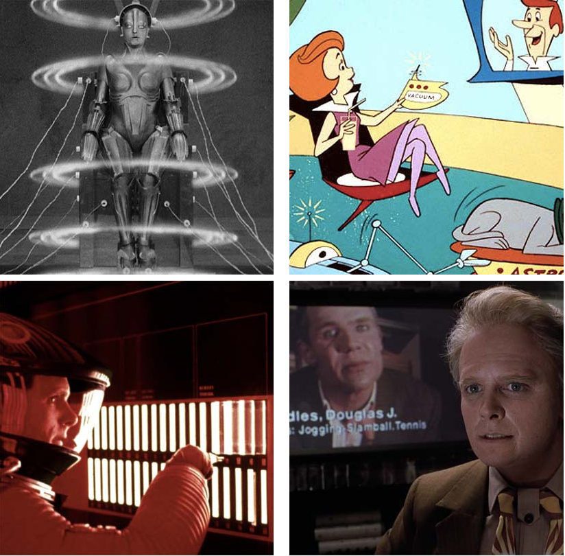
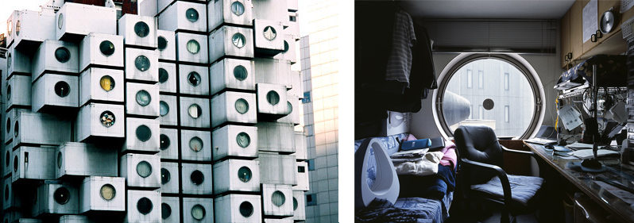
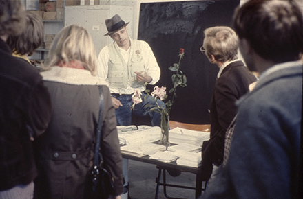
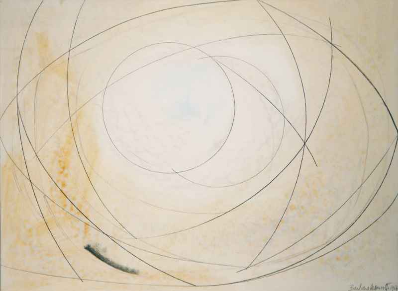

Using Design Fiction to Explore Near-Future User Experiences in Libraries
ALAO Annual Conference
John Jung / @johnjungdotus
Kathy Zadrozny / @_kzadrozny
October 28, 2016
Who are we?

John Jung
Programmer/AnalystUniversity of Chicago Libraries

Kathy Zadrozny
Web Developer and Graphic Design SpecialistUniversity of Chicago Libraries
Introduce yourself.
- What's your name?
- Where do you work?
- What's your favorite SciFi or Futuristic story?
Agenda - CHANGE
| 1:15-1:25 (10 min) | Research overview Secret Shopper Findings |
| 1:25-1:40 (15 min) | Research discussion Your food shopping findings |
Past Iterations
The Future in Fiction
Dystopian & Utopian
Dystopian Architecture
Isolation
Nakagin Capsule Tower (1972)
Kisho Kurokawa
Utopian Architecture
Community
X-Seed 4000 (1995)
Peter Neville / Taisei Corporation
Design Fiction in Art
Exploring Solutions
Organization for Direct Democracy by Referendum (1972)
Documenta 5, Joseph Beuys
Design Fiction in Art
"One is lost in a new world of a thousand possibilities...which will carry one forward into a completely unknown territory"
Pierced Forms (1959)Barbara Hepworth
Design Fiction in Practice
Our product:
iProvidence Coffee Pots
How might we...?
Why Use a Fictional Example?
Benefits of skits
- Build empathy.
- Focus on details of the experience.
- Make abstract ideas concrete.
- Provide an opportunity for stakeholder feedback.